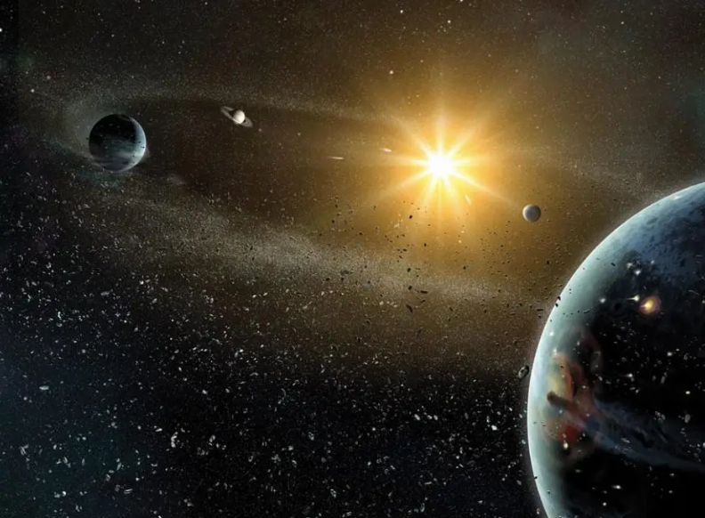
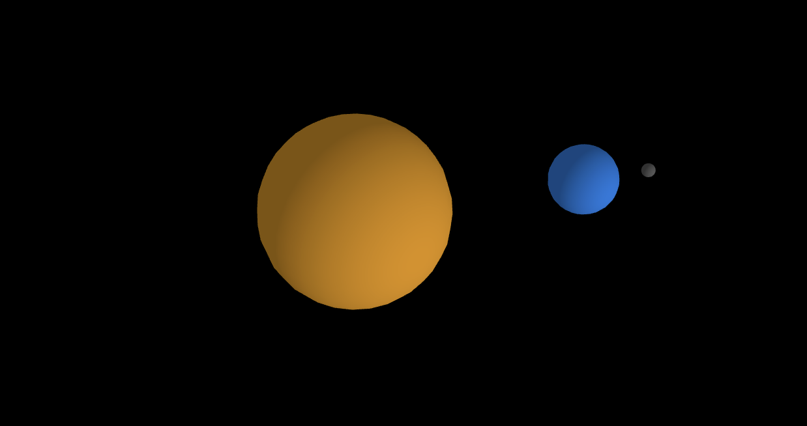
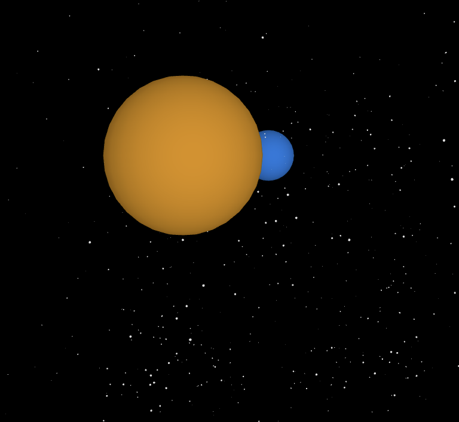
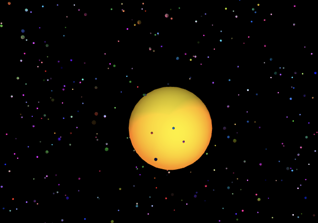

Experiment 5 - 3D Graphics
Imitate
For this experiment I wanted to take inspiration from my childhood. I would love going to the science centers as a little kid, but I would especially love the exhibitions about space. For this experiment I wanted to create 3D planets orbiting in space.
I went searching on open processing for some examples and I came across “Planets” by Richard Bourne. This would serve as my starting point as I want to modify this example by giving it an interesting background.
Integrate
My first step was to recreate the spheres to represent the planets. This was pretty simple to do using the sphere function already provided by the library. I just need to tell the sphere their color, size, and where to be placed.
I am using the sun as my center, so I translate the moon and earth based on the sun's location. Each planet has its own rotation it is doing that is also connected to the rotation of the whole canvas. This creates the effect of the planets orbiting around the sun. With this set up I can quickly copy and paste to create more planets. It is probably best to turn this into a function later on if I want to add more planets.
Innovate
With my planets implemented, the next step for me is to add a background for the planets. Right now it's just a black background, but I want to add stars and potentially blackholes and asteroids. My first step is to get glowing stars to surround the planets. I looked for some examples on open processing and did some google searches. I came across some interesting examples but the one I was most honed in on was “Stars2” by HJ on open processing. This was one of the more realistic looking examples I found, but I wanted to make a few modifications to it. I wanted to add a twinkle effect to the glowing stars. The first thing I did was get the star implemented into the canvas. Currently I am just passing in for 1000 stars to be made but this number will need to be adjusted at the end. 
However, since I am using orbital controls the stars appear to be on a flat 2d surface. At certain angles you can't see the stars at all. I needed to figure out how to get the stars to appear more like it is in a 3D space. To solve this the stars are set up as an array of vectors to represent their positions. The stars are then drawn in the background as points using the sphere function. It virtually looks the same except the stars are now spheres rather than flat circles. With this issue resolved I can go back to focusing on getting the stars to twinkle now. To achieve this desired effect I used the noise function. The stars felt a bit dim so to brighten them I gave each one a point light. With this completed I wanted to try to add in more to the background.
I wanted to add a shoot star effect. This was simple to get implemented as it meant copying the code I had to create stars and a translation that is constantly updated to move the stars across the canvas. I still wasn't satisfied with the results so I did some searching to look at more space images for inspiration. I realized that I could leave all the stars white. I wanted to add some color to some of the stars. 
Reflection
I completed this experiment independently. This experiment wasn’t too difficult to complete. Once I reviewed the multiple examples from open processing and p5.js, I got a pretty good idea of how the objects work in a 3D space. The experiment consisted of making multiple spheres to create my space environment. Trying to keep it as realistic I added different color stars that had a twinkling effect.
Results
Control with mouse